Tap
Touch and lift within 550 ms
Next status.
- On the Pomodoro, it starts or pauses the timer.
- On a call or meeting, it goes back to your own status.
- On a menu, it runs the tile you tap. A tap off the tiles closes the menu.
MiniBar · controls guide
MiniBar tells the people around your desk whether it’s a good time to talk. You run it with one finger on its screen, two side buttons, and by turning it over. This page shows what each of those does, and how the screens connect. Every picture is a real screen from the mock-up, at the bar’s 640 × 172 shape.
Seven things you can do. Each has one main job everywhere, plus a few screens where it does something more specific.
On the screen, and the whole bar
Touch and lift within 550 ms
Next status.
Slide at least 40 px
Swipe left for the next status, right for the previous one.
Keep still for 550 ms
Opens the menu for the screen you’re on.
Turn the bar over
Turns the layout the right way up, silences any alarm, and starts whatever the Pomodoro is waiting for.
Side buttons
Press the upper side button
Next status, without looking.
Press the lower button, let go within 0.4 s
Turns the screen dark, or back on.
Keep PWR down for 3 s
Powers the bar off. A PWR press starts it again.
These hold on every screen, so you can guess what will happen even on one you haven’t seen.
Each diagram uses the bar’s real screens. Arrows are labeled with what moves you along: a control, or something that happens on its own, like a timer ending or a call starting.
Seven statuses in a loop. You step through them with a tap, a swipe or BOOT; the Remote’s status buttons jump straight to any of them.
25 minutes of focus, a 5 minute break, and after every fourth focus a 15 minute break. Each finished focus earns a red tomato; the one in progress ripens from the bottom up.
Two sources can set your status for you: a calendar meeting, and a call your Mac notices. You can always override them.
A short PWR press is the screen switch. Holding PWR is the power switch.
On first start the bar shows a QR code that joins your phone to its MiniBar-Setup network, where a page lets you pick the office Wi-Fi.
Before a phone, a Mac or a script can change the bar over Wi-Fi, it pairs once with a code shown only on the bar, so only someone who can see the bar can pair.
Pick a screen and a control to see what MiniBar does next. The examples follow the mock-up’s sample day: your own status is Busy and a focus session is running, unless a result says otherwise. Every result comes from the controls map; the sentence above the pictures is the map’s own.
Every screen, and what each control does there. Wide tables scroll sideways inside their frames.
The status color carries the meaning as well as the word, so it reads from across the room. White text on every color is 4.91:1 or better.
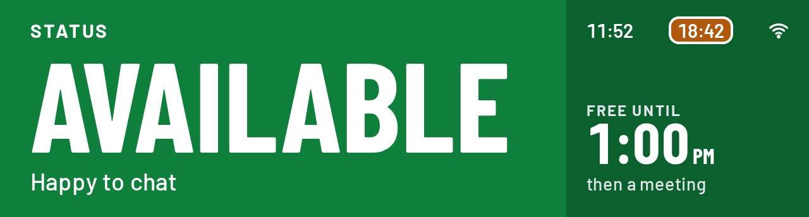

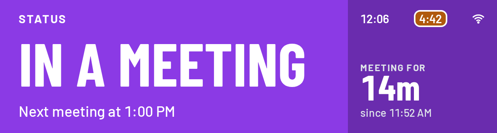
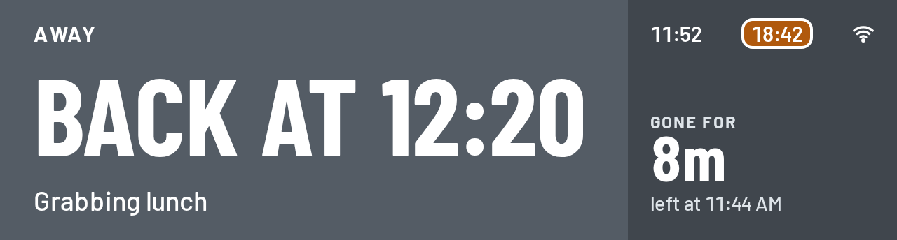
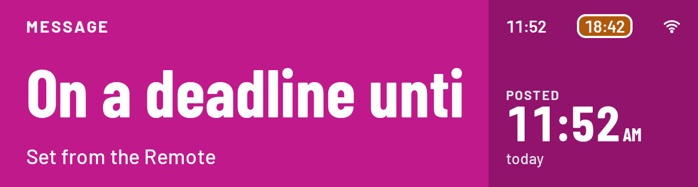
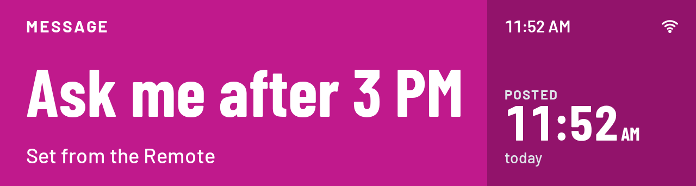
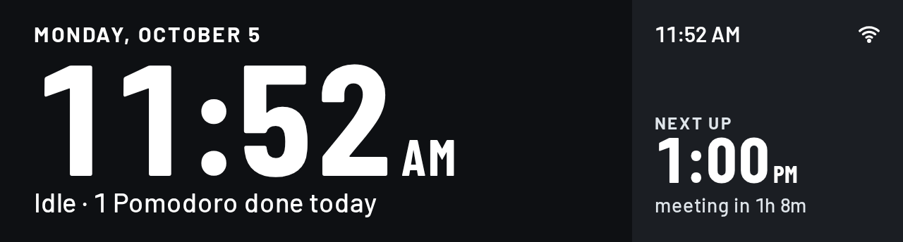
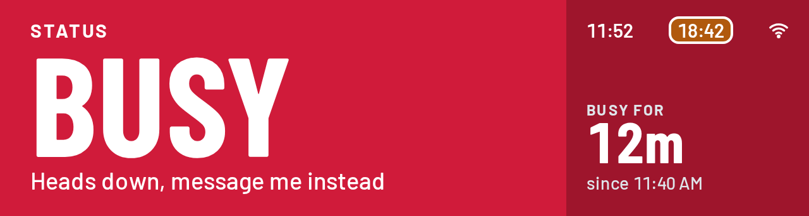
| Status | Says | Nexttap, swipe left or BOOT | Previousswipe right |
|---|---|---|---|
| Available | Free to talk | Busy | Clock |
| Busy | Please don’t interrupt | In a meeting | Available |
| In a meeting | A meeting you set yourself | Pomodoro | Busy |
| Away | Not at the desk | Message | Pomodoro |
| Message | Your own words | Clock | Away |
| Clock (idle) | Nothing set | Available | Message |
Orange means focus, please don’t interrupt. Teal and petrol mean a break, a good moment to chat.
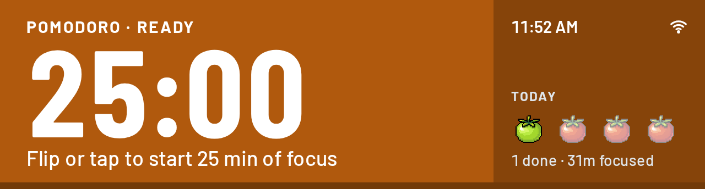
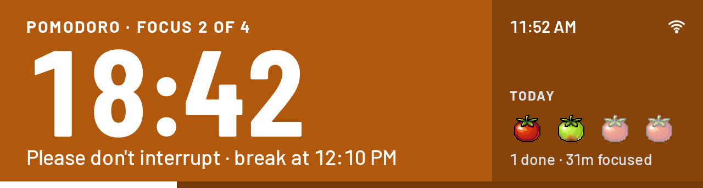
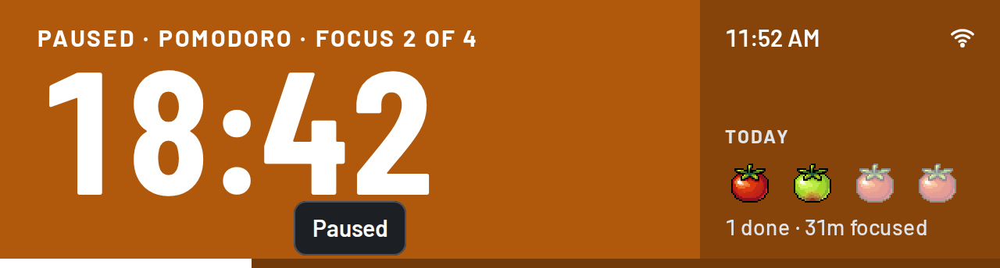
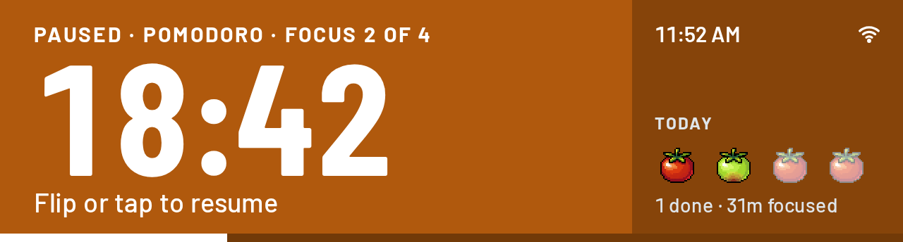
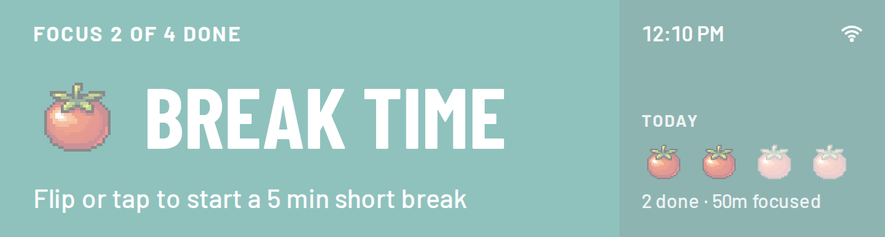
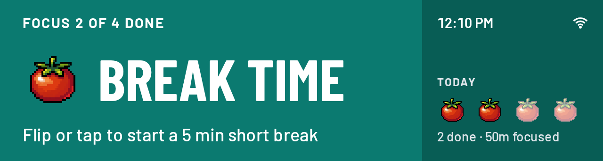
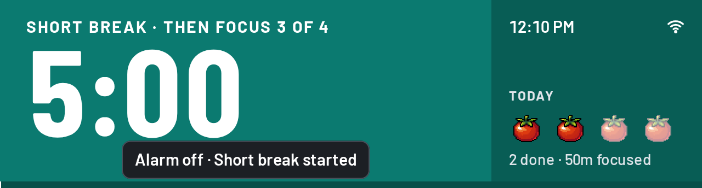
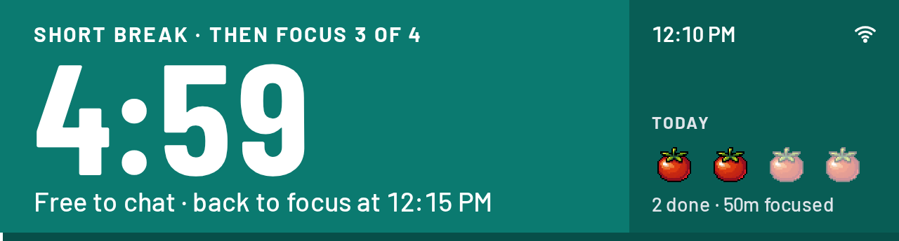
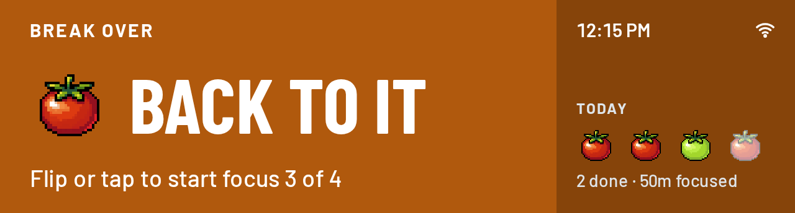
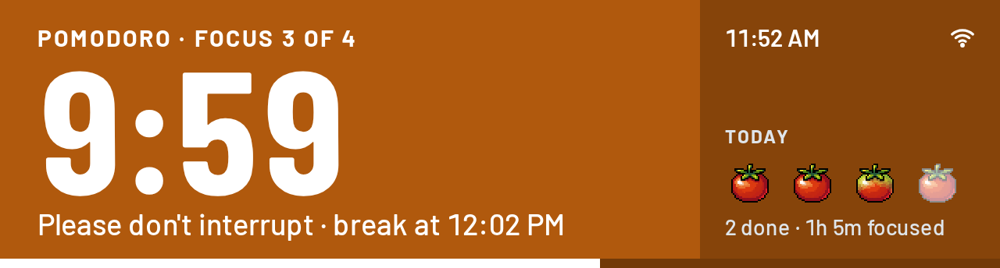
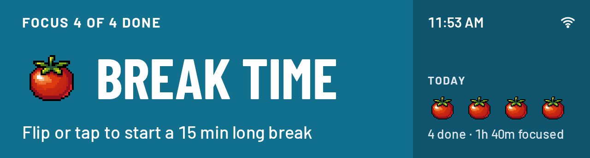
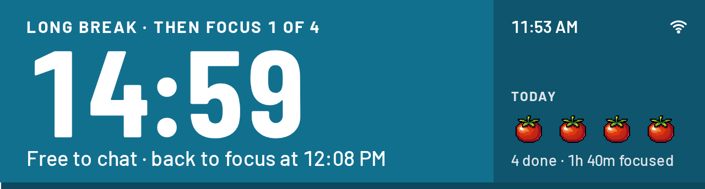
| Control | Pomodoro · ready | Pomodoro · focus running | Pomodoro · break running | Pomodoro · paused | Pomodoro · alarm ringing | Pomodoro · waiting (alarm quiet) |
|---|---|---|---|---|---|---|
| Tap | Starts focus 1 of 4 (“Focus started”). | Pauses (“Paused”). | Pauses (“Paused”). | Resumes (“Focus resumed” or “Short break resumed”). | Silences it and starts the next phase (“Short break started” or “Focus started”). | Starts the next phase (“Short break started” or “Focus started”). |
| Swipe left | Next status: Away. | Next status: Away; the timer keeps running, shown as a pill in the corner. | Next status: Away; the break keeps running in the corner pill. | Next status: Away; stays paused. | Silences it and goes to the next status: Away (the corner pill reads “Done”). | Next status: Away. |
| Swipe right | Previous status: In a meeting. | Previous status: In a meeting; the timer keeps running. | Previous status: In a meeting. | Previous status: In a meeting. | Silences it and goes to the previous status: In a meeting. | Previous status: In a meeting. |
| Hold | Opens the timer menu (Skip “to short break”, Stop, Settings, Done; no +5). | Opens the timer menu (Skip “to short break” or “to long break”, +5, Stop, Settings, Done). | Opens the timer menu (Skip “to focus”, +5 “min to this break”, Stop, Settings, Done). | Opens the timer menu (Skip, +5, Stop, Settings or Show again, Done). | Silences it and opens the timer menu (Skip, Stop, Settings, Done). | Opens the timer menu (Skip, Stop, Settings, Done). |
| Flip | Turns the layout and starts focus 1 of 4 (“Focus started”). | Turns the layout only; the running timer is left alone (“Focus already running”). | Turns the layout only (“Short break already running”). | Turns the layout and resumes (“Focus resumed”). | Turns the layout, silences it and starts the next phase (“Alarm off · Short break started”). | Turns the layout and starts the next phase. |
| BOOT | Next status: Away. | Next status: Away; the timer keeps running. | Next status: Away. | Next status: Away. | Silences it only (“Alarm off”); the waiting screen stays. | Next status: Away. |
| PWR press | Screen dark. | Screen dark; the timer keeps running (ticking, if on, goes silent while dark). | Screen dark; the break keeps running. | Screen dark. | Silences it only (“Alarm off”); the screen stays on. | Screen dark. |
| PWR hold 3 s | KEEP HOLDING, then POWERING OFF, then off. | KEEP HOLDING, then POWERING OFF, then off; the run stops, today’s tomatoes stay. | KEEP HOLDING, then POWERING OFF, then off. | KEEP HOLDING, then POWERING OFF, then off. | KEEP HOLDING, then POWERING OFF, then off; the run stops. | KEEP HOLDING, then POWERING OFF, then off. |
On a call is cobalt and names the app when the Mac sends one. A calendar meeting shares the meeting purple and is told apart by its CALENDAR chip. Titles show only with Show meeting titles on.
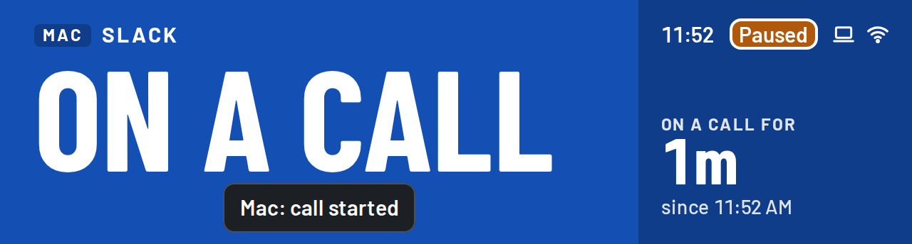
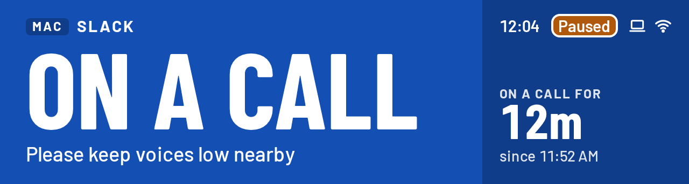
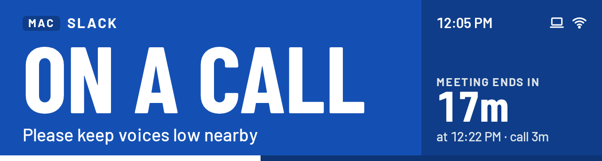
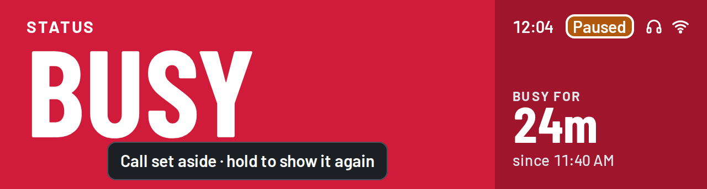
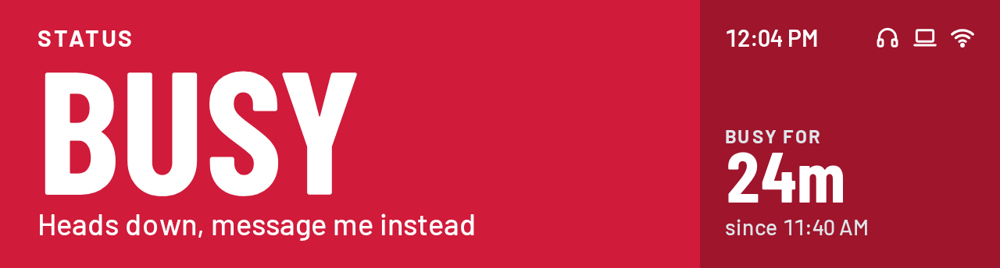
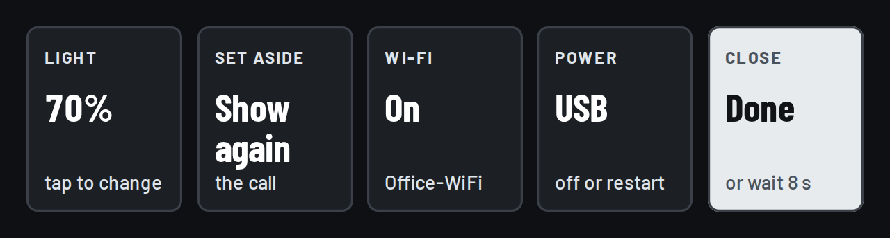
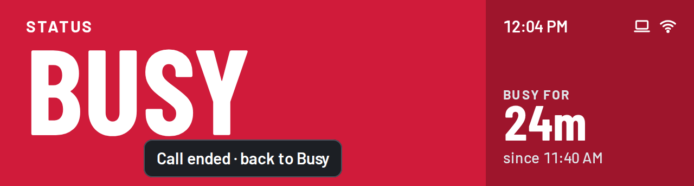
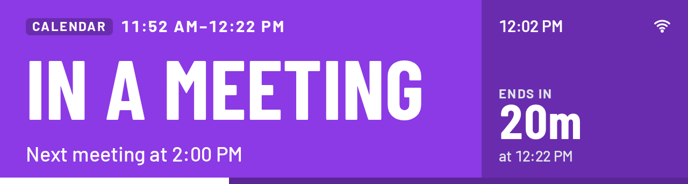
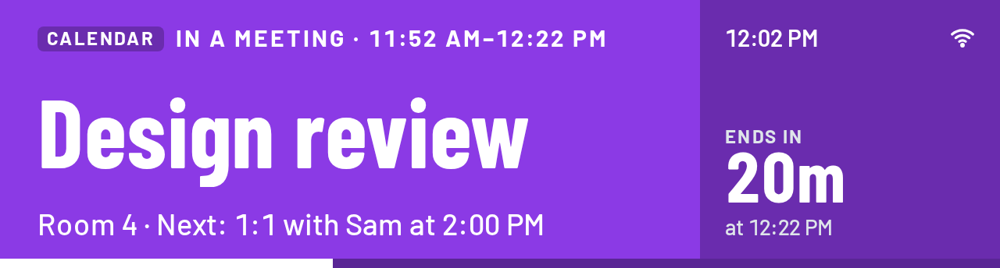
| Control | On a call (from the Mac) | In a meeting (from the calendar) | Busy, with the call set aside |
|---|---|---|---|
| Tap | Back to your own status; the call is set aside until it ends (“Call set aside · hold to show it again”). | Back to your own status; the meeting is set aside until it ends (“Meeting set aside · hold to show it again”). | As on your status (next status, or start or pause on the Pomodoro); the call or meeting stays aside. |
| Swipe left | The status after your own (from Pomodoro: Away); sets the call aside (“Call set aside · Away”). | The status after your own; sets the meeting aside (“Meeting set aside · Away”). | Next status; stays aside. |
| Swipe right | The status before your own (from Pomodoro: In a meeting); sets the call aside. | The status before your own; sets the meeting aside. | Previous status; stays aside. |
| Hold | Opens the quick menu, even when your status is the Pomodoro. | Opens the quick menu, even when your status is the Pomodoro. | Opens the quick menu with Show again (the timer menu with Show again on the Pomodoro). |
| Flip | Turns the layout, sets the call aside, starts or resumes the Pomodoro and shows it (“Focus resumed”); it stays silent while the call is on. | Turns the layout, sets the meeting aside, starts or resumes the Pomodoro and shows it. | As on your status: turns the layout and starts what the Pomodoro is waiting for. |
| BOOT | Same as a tap: back to your own status, call set aside. | Same as a tap: back to your own status, meeting set aside. | Next status; stays aside. |
| PWR press | Screen dark; the call still shows when woken. | Screen dark; the meeting still shows when woken. | Screen dark. |
| PWR hold 3 s | KEEP HOLDING, then POWERING OFF, then off; after power-on a call still going shows again (“Ready · On a call”). | KEEP HOLDING, then POWERING OFF, then off; after power-on a meeting still going shows again (“Ready · In a meeting”). | KEEP HOLDING, then POWERING OFF, then off; after power-on a call or meeting still going takes over again. |
A powered-off bar looks the same as a dark screen. The difference is what wakes it: anything wakes a dark screen, only PWR starts a powered-off one.
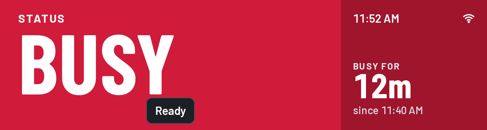
| Control | Screen dark | KEEP HOLDING | POWERING OFF | Powered off | Starting up |
|---|---|---|---|---|---|
| Tap | Wakes the screen only, showing whatever is current plus any waiting toast. | Should do nothing; Mock-up differs: the mock-up passes it to the screen underneath, unseen (see rules). | Should do nothing; Mock-up differs: the mock-up changes the status underneath (verified: Busy became In a meeting). | Nothing. | Nothing until it has started. |
| Swipe left | Wakes the screen only. | Should do nothing; Mock-up differs: the mock-up changes the status underneath. | Should do nothing; Mock-up differs: the mock-up passes it through. | Nothing. | Nothing. |
| Swipe right | Wakes the screen only. | Should do nothing; Mock-up differs: the mock-up changes the status underneath. | Should do nothing; Mock-up differs: the mock-up passes it through. | Nothing. | Nothing. |
| Hold | Wakes the screen only; no menu. | Should do nothing; Mock-up differs: the mock-up can open a menu underneath. | Should do nothing. | Nothing. | Nothing. |
| Flip | Wakes the screen, then turns the layout and starts what the Pomodoro is waiting for. | Turns the layout and does its usual Pomodoro start underneath; the hold continues. | No lasting effect; it powers off. | Nothing (the layout follows the bar’s position once it’s on). | Nothing. |
| BOOT | Wakes the screen only. | Acts on the screen underneath (next status); the hold continues. | No lasting effect; it powers off. | Nothing. | Nothing. |
| PWR press | Screen on. | Letting go before 3 s returns to the screen as it was; nothing else changes (a pairing code is still up). | No lasting effect; it powers off. | Starts the bar: the splash. | Nothing. |
| PWR hold 3 s | KEEP HOLDING, then POWERING OFF, then off. | Reaching 3 s: POWERING OFF. | No lasting effect; it powers off. | Starts the bar when you let go. | Nothing. |
The setup screens are a deep navy, so they never read as a status.
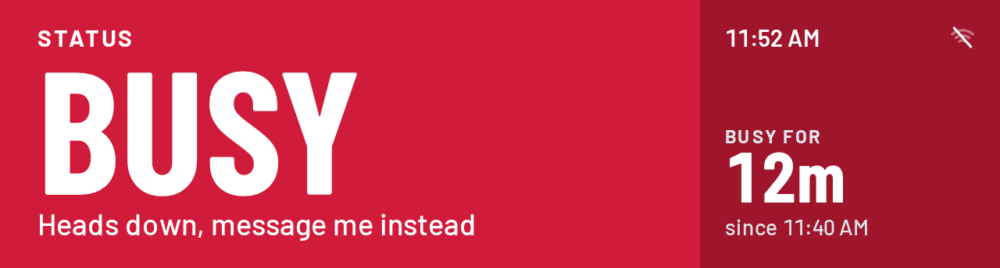
| Control | Wi-Fi setup · QR code | Wi-Fi setup · Connecting | Wi-Fi setup · Couldn't connect | Wi-Fi setup · Connected | Busy, offline (Wi-Fi skipped) |
|---|---|---|---|---|---|
| Tap | Toast “Scan the code with your phone”. | Toast “Still connecting”. | Back to the QR code. | On to your status (setup is done). | As on the status shown. |
| Swipe left | Same as a tap. | Same as a tap. | Back to the QR code. | Same as a tap. | As on the status shown. |
| Swipe right | Same as a tap. | Same as a tap. | Back to the QR code. | Same as a tap. | As on the status shown. |
| Hold | Opens Setup options (Skip, QR code, Done). | Opens Setup options (Skip stops trying and goes offline; QR code starts over). | Opens Setup options. | Finishes setup and opens the menu for your status (quick menu, or the timer menu on the Pomodoro). | As on the status shown (quick or timer menu). |
| Flip | Turns the layout; the Pomodoro rule runs underneath, with its toast over the QR code. | Turns the layout; the Pomodoro rule runs underneath. | Turns the layout; the Pomodoro rule runs underneath. | Turns the layout; the Pomodoro rule runs underneath. | As on the status shown. |
| BOOT | Same as a tap. | Same as a tap. | Back to the QR code. | Same as a tap. | As on the status shown. |
| PWR press | Screen dark; the QR code is back when woken. | Screen dark; setup carries on. | Screen dark. | Screen dark. | Screen dark. |
| PWR hold 3 s | KEEP HOLDING, then off; it comes back to the QR code. | KEEP HOLDING, then off; it comes back to the QR code. | KEEP HOLDING, then off; it comes back to the QR code. | KEEP HOLDING, then off; on power-on it shows your status. | KEEP HOLDING, then off; it starts offline again. |
The code uses the Clock screen’s dark surfaces, counts down in the info column, and fills the bottom bar as time runs out.
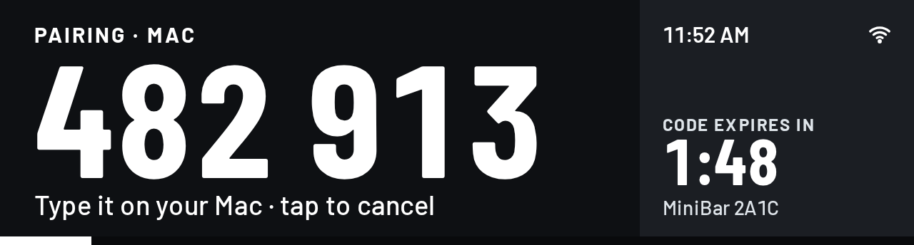
| Control | Pairing code |
|---|---|
| Tap | Cancels pairing (“Pairing canceled”) and returns to the screen underneath; a touch that began before the code appeared is ignored. |
| Swipe left | Cancels pairing; the status doesn’t change. |
| Swipe right | Cancels pairing; the status doesn’t change. |
| Hold | Cancels pairing when you lift; no menu opens. |
| Flip | Cancels pairing, then turns the layout, silences any alarm and starts what the Pomodoro is waiting for (“Pairing canceled · Focus started”, or “Pairing canceled”). |
| BOOT | Cancels pairing (“Pairing canceled”). |
| PWR press | Cancels pairing and darkens the screen, with no toast. |
| PWR hold 3 s | KEEP HOLDING over the code; let go early and the code is back; at 3 s it powers off and pairing ends (devices stay paired, the wait after failures is cleared). |
Where the mock-up still differs from the rules above. The guide describes the intended behavior and marks these spots.